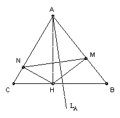

ABC is an acute-angled triangle. H is the foot of the perpendicular from A to BC. M and N are the feet of the perpendiculars from H to AB and AC. LA is the line through A perpendicular to MN. LB and LC are defined similarly. Show that LA, LB and LC are concurrent.
Solution

Let O be the circumcenter. It is sufficient to show that O lies on LA.
Angle AOB = 2 angle ACB. Hence angle BAO = 90o - C.
Angles AMH and ANH are both 90o, so AMHN is cyclic. Hence angle AMN = angle AHN = 90o - angle HAN = C. Hence the angle between LA and AB is 90o - C. Hence O lies on LA.

© John Scholes
jscholes@kalva.demon.co.uk
30 Dec 2002
Last corrected/updated 30 Dec 02